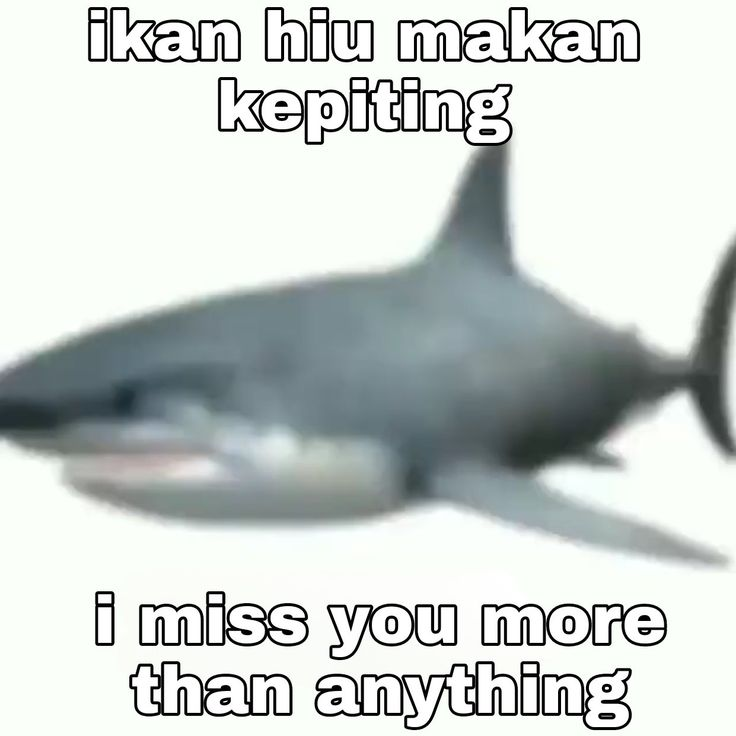

Apa Itu Hiu ?
Secara singkat, Hiu adalah salah satu predator paling efisien di lautan yang telah hidup selama ratusan juta tahun.
Dengan tubuh yang streamline dan kemampuan berenang cepat, mereka merupakan makhluk yang sangat beradaptasi dengan baik di lingkungan laut.
Hiu memiliki peran penting dalam menjaga keseimbangan ekosistem laut,
namun beberapa spesies menghadapi ancaman kepunahan akibat perburuan
dan penangkapan ikan yang berlebihan.
Jenis-Jenis Hiu
Hiu telah berada di lautan selama 450 juta tahun dan merupakan salah satu makhluk yang penting
dan menghuni lautan kita. Mereka merupakan fosil hidup, menguasai lautan bahkan sebelum dinosaurus
menguasai daratan. Sebagai predator puncak, hiu memegang peranan penting dalam ekosistem dengan
mengendalikan dan memelihara spesies yang lebih rendah pada rantai makanan. Dengan memakan ikan
yang sakit dan lemah, mereka memelihara keseimbangan antara kompetitor laut lainnya dan menjaga
keragaman spesies yang ada di dalam lautan kita. Untuk itu, keberadaan mereka sangat penting untuk
kesehatan laut.
Lalu apa saja sih Jenis-Jenis Hiu ?
Great White Shark
Hiu Putih Besar (Great White Shark) adalah salah satu spesies hiu paling terkenal dan sering disebut sebagai predator puncak di lautan. Panjangnya bisa mencapai 6 meter, dan mereka dikenal karena kekuatannya serta kemampuan berburu mangsa besar seperti anjing laut. Meskipun terkenal menakutkan, serangan terhadap manusia sebenarnya jarang terjadi.
Mengapa Hiu Putih Besar Penting?
1. Predator Puncak: Hiu putih besar berperan penting dalam menjaga keseimbangan ekosistem laut. Sebagai predator puncak, mereka membantu mengontrol populasi mangsa dan mendukung kesehatan populasi ikan lainnya.
2. Adaptasi yang Unik: Hiu putih besar memiliki berbagai adaptasi yang memungkinkan mereka berburu dengan efisien, termasuk kemampuan mendeteksi getaran dan bau di air, serta kecepatan yang tinggi.
3. Konservasi: Meskipun penting, hiu putih besar terancam oleh penangkapan ikan, perusakan habitat, dan pemanasan global. Upaya konservasi sangat penting untuk menjaga kelangsungan hidup mereka di lautan.
Kesimpulan:
Hiu putih besar adalah makhluk yang menakjubkan dengan peran kunci dalam ekosistem laut. Meskipun sering dianggap menakutkan, penting untuk memahami peran ekologis mereka dan melindungi spesies ini dari ancaman yang mereka hadapi.
Hammerhead Shark
Hiu martil memiliki bentuk kepala yang unik menyerupai palu, yang meningkatkan kemampuan sensorik mereka dalam mendeteksi mangsa di dasar laut. Mereka dapat ditemukan di perairan hangat di seluruh dunia, terutama di wilayah pesisir. Hiu martil memakan berbagai jenis ikan kecil, gurita, dan kadang-kadang ikan pari.
Mengapa Hiu Martil Penting?
1. Peran Ekosistem: Hiu martil membantu menjaga keseimbangan ekosistem dengan mengontrol populasi mangsa mereka. Dengan mengatur jumlah ikan kecil dan organisme laut lainnya, mereka berkontribusi pada kesehatan lingkungan laut.
2. Perilaku Sosial: Hiu martil dikenal memiliki perilaku sosial yang menarik, sering ditemukan dalam kelompok saat berburu. Ini menunjukkan kecerdasan dan interaksi sosial di antara spesies ini.
3. Konservasi: Meskipun mereka penting untuk ekosistem, hiu martil terancam oleh penangkapan ikan dan perusakan habitat. Melindungi spesies ini sangat penting untuk menjaga keseimbangan ekosistem laut.
Kesimpulan:
Hiu martil adalah makhluk yang menakjubkan dengan peran penting dalam ekosistem laut. Dengan adaptasi unik dan perilaku sosialnya, mereka tidak hanya menarik untuk dipelajari, tetapi juga vital untuk kesehatan laut. Perlindungan terhadap hiu martil dan habitatnya sangat diperlukan untuk memastikan keberlangsungan mereka.
Whale Shark
Hiu paus adalah spesies hiu terbesar di dunia dan termasuk dalam kategori hiu pemakan plankton. Mereka dapat tumbuh hingga 12 meter atau lebih dan memiliki pola bintik-bintik unik di tubuhnya.
Meskipun berukuran besar, hiu paus tidak berbahaya bagi manusia karena mereka lebih suka makan organisme mikroskopis seperti plankton dan ikan kecil.
Mengapa Hiu Paus Penting?
1. Peran Ekosistem: Hiu paus memainkan peran penting dalam ekosistem laut dengan membantu menjaga keseimbangan populasi plankton. Dengan memakan plankton, mereka membantu memastikan bahwa tidak ada satu jenis organisme yang mendominasi.
2. Pariwisata Berkelanjutan: Hiu paus menarik perhatian wisatawan dan menjadi bagian dari pariwisata berkelanjutan di banyak tempat. Interaksi dengan hiu paus di laut dapat memberikan manfaat ekonomi bagi komunitas lokal.
3. Konservasi: Sayangnya, hiu paus terancam oleh aktivitas manusia, termasuk penangkapan ikan dan perusakan habitat. Menjaga populasi hiu paus sangat penting untuk kesehatan ekosistem laut.
Kesimpulan:
Hiu paus adalah makhluk yang menakjubkan dan memiliki peran penting dalam ekosistem laut. Meskipun besar dan tampak menakutkan, mereka sebenarnya sangat jinak dan tidak berbahaya. Melindungi spesies ini dan habitatnya sangat penting untuk menjaga keseimbangan lingkungan.
Mitos dan Fakta Tentang Hiu
Hiu sering kali digambarkan sebagai makhluk laut yang menakutkan dan berbahaya dalam budaya
populer. Banyak orang yang memiliki pandangan negatif terhadap hiu karena informasi yang kurang
akurat atau kesalahpahaman yang berkembang. Padahal, hiu adalah makhluk laut yang penting bagi
ekosistem dan sering kali tidak berbahaya bagi manusia. Dalam bagian ini, kita akan mengupas
beberapa mitos yang umum tentang hiu dan mengungkap fakta sebenarnya di baliknya,
agar kita bisa lebih memahami peran penting mereka di lautan.
1. Hiu Selalu Berbahaya dan Akan Menyerang Manusia
Mitos bahwa semua hiu berbahaya dan selalu menyerang manusia adalah salah besar. Dari lebih dari 500 spesies hiu yang ada, hanya sebagian kecil yang pernah terlibat dalam serangan terhadap manusia.
Mengapa Hiu Tidak Menyerang Manusia?
1. Kesalahan Identifikasi: Banyak serangan hiu terhadap manusia terjadi karena kesalahan identifikasi. Hiu sering kali menganggap manusia sebagai mangsa lain, seperti anjing laut, terutama ketika penyelam atau peselancar berada di permukaan air.
2. Preferensi Makanan: Sebagian besar spesies hiu memiliki diet yang sangat spesifik dan tidak tertarik pada manusia. Mereka lebih suka memangsa ikan, moluska, dan mamalia laut lainnya.
3. Frekuensi Serangan yang Rendah: Serangan hiu pada manusia sangat jarang terjadi. Menurut statistik, jumlah serangan hiu yang fatal sangat sedikit dibandingkan dengan jumlah orang yang berenang atau berselancar di laut setiap tahun.
Kesimpulan :
Hiu merupakan bagian penting dari ekosistem laut dan memainkan peran vital dalam menjaga keseimbangan lingkungan. Meskipun ada beberapa spesies hiu yang dapat berpotensi berbahaya, penting untuk memahami bahwa serangan terhadap manusia adalah kejadian yang sangat jarang dan sering kali disebabkan oleh kesalahpahaman.
Edukasi dan pemahaman yang lebih baik tentang perilaku hiu dapat membantu mengurangi ketakutan dan meningkatkan keselamatan saat berada di laut.
2. Hiu Tidak Pernah Sakit
Meskipun hiu memiliki sistem kekebalan tubuh yang kuat, mereka tetap bisa terinfeksi penyakit, termasuk kanker dan infeksi kulit. Hiu pun bukanlah makhluk yang kebal terhadap penyakit.
Mengapa Hiu Masih Bisa Sakit?
1. Kekebalan Tubuh yang Unik : Hiu memiliki sistem kekebalan tubuh yang berbeda dengan mamalia, termasuk manusia. Meskipun mereka memiliki kemampuan untuk melawan beberapa penyakit, tidak berarti mereka tidak rentan terhadap infeksi. Sebagai contoh, penelitian menunjukkan bahwa hiu dapat mengembangkan tumor, termasuk jenis kanker tertentu, seperti yang ditemukan pada banyak hewan lainnya.
2. Lingkungan dan Paparan Penyakit: Hiu hidup di lingkungan laut yang dapat membawa berbagai patogen. Paparan terhadap bakteri, virus, dan parasit dapat menyebabkan infeksi. Selain itu, faktor lingkungan seperti polusi laut dan perubahan iklim dapat mempengaruhi kesehatan hiu.
3. Kulit dan Luka: Hiu sering kali memiliki luka akibat pertempuran dengan hiu lainnya atau dari interaksi dengan perahu. Luka ini dapat terinfeksi jika tidak diobati, yang menunjukkan bahwa hiu juga dapat mengalami masalah kesehatan.
Kesimpulan:
Hiu adalah bagian penting dari ekosistem laut, dan meskipun mereka memiliki kekuatan luar biasa dan adaptasi yang mengesankan, mereka tetap rentan terhadap penyakit. Memahami bahwa hiu bukan makhluk yang kebal terhadap sakit adalah langkah penting dalam menghargai dan melindungi spesies ini. Edukasi mengenai kesehatan hiu dan pentingnya menjaga lingkungan mereka dapat membantu kita menjaga keseimbangan ekosistem laut yang sehat.
3. Semua Hiu Harus Hidup di Laut Dalam
Banyak orang beranggapan bahwa hiu hanya dapat ditemukan di perairan laut dalam. Namun, kenyataannya adalah bahwa banyak spesies hiu juga dapat ditemukan di perairan dangkal di dekat pesisir.
Di Mana Saja Hiu Dapat Ditemukan?
1. Perairan Dangkal: Beberapa spesies hiu, seperti hiu martil, sering ditemukan di perairan pesisir dangkal. Hiu ini sering berjemur di dekat permukaan dan mencari makanan di area yang kaya akan kehidupan laut, seperti terumbu karang dan padang lamun.
2. Estuari dan Sungai: Beberapa spesies hiu, seperti hiu belang (bull shark), dapat hidup di estuari dan bahkan masuk ke sungai. Hiu belang terkenal karena kemampuannya beradaptasi dengan air tawar dan dapat ditemukan jauh di dalam sungai besar.
3. Keanekaragaman Habitat: Hiu memiliki kemampuan adaptasi yang luar biasa dan dapat hidup dalam berbagai habitat, mulai dari perairan dangkal hingga laut dalam. Ini menunjukkan bahwa mereka memiliki peran penting dalam ekosistem yang berbeda, bukan hanya di kedalaman laut.
Kesimpulan:
Penting untuk memahami bahwa hiu tidak terbatas pada perairan laut dalam. Mereka berkontribusi pada ekosistem di berbagai lingkungan, dari pesisir hingga perairan tawar. Mengetahui keanekaragaman habitat hiu dapat membantu kita menghargai pentingnya melindungi spesies ini dan habitatnya. Edukasi mengenai persebaran hiu dapat membantu mengurangi stigma dan meningkatkan kesadaran tentang perlunya konservasi.